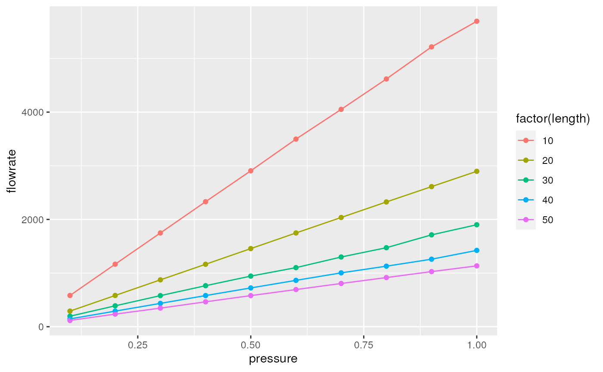
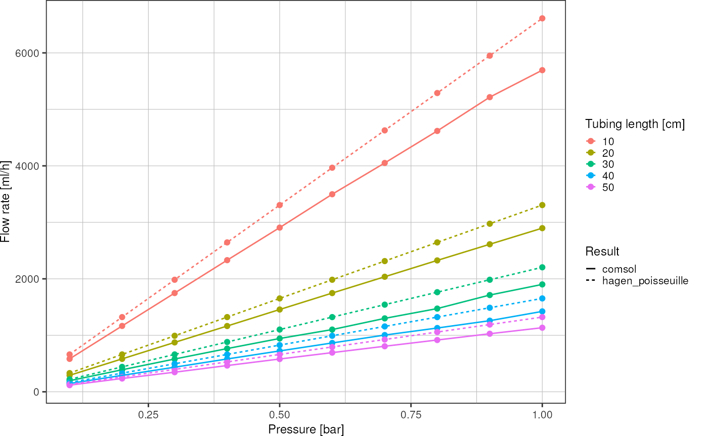
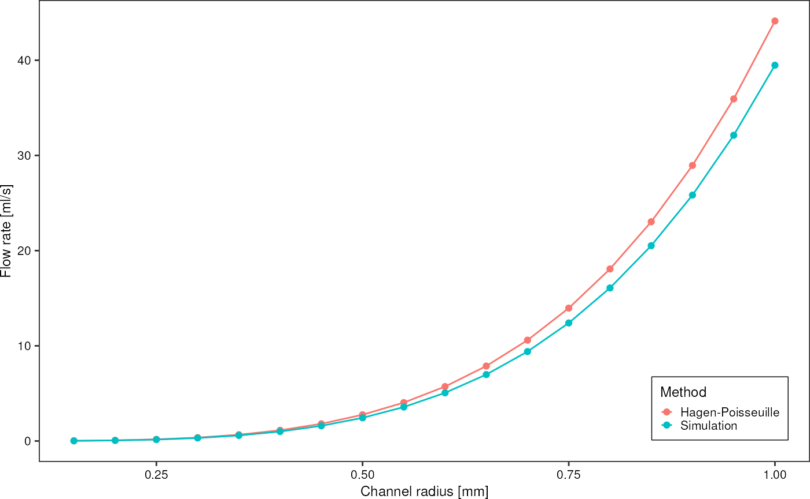
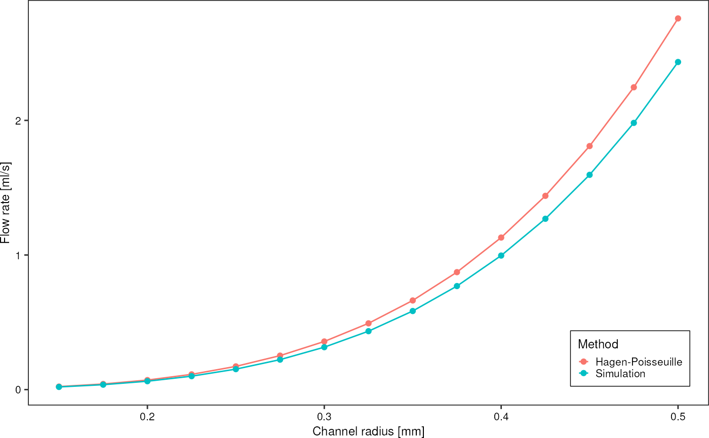

COMSOL Simulations
comsol.RmdRead the COMSOL file
d <- readr::read_table("data/comsol/01_tubing_line_integration_spfU.txt", skip = 1, col_names = c("radius", "length", "pressure", "flowrate"))
#>
#> ── Column specification ────────────────────────────────────────────────────────
#> cols(
#> radius = col_double(),
#> length = col_double(),
#> pressure = col_double(),
#> flowrate = col_double()
#> )
d
#> # A tibble: 45 × 4
#> radius length pressure flowrate
#> <dbl> <dbl> <dbl> <dbl>
#> 1 0.15 10 1000 0.00197
#> 2 0.15 10 5000 0.00985
#> 3 0.15 10 10000 0.0197
#> 4 0.15 10 50000 0.0982
#> 5 0.15 10 100000 0.197
#> 6 0.15 20 1000 0.00100
#> 7 0.15 20 5000 0.00500
#> 8 0.15 20 10000 0.00997
#> 9 0.15 20 50000 0.0494
#> 10 0.15 20 100000 0.0977
#> # … with 35 more rows
d %>%
ggplot(aes(x = pressure, y = flowrate, color = factor(radius*2))) +
geom_point() +
geom_line(aes(linetype = factor(length))) +
labs(x = "Pressure difference [Pa]",
y = "Volumetric flow rate [m^3/s]",
linetype = "Tubing length [cm]",
color = "Tubing inner diameter [mm]") +
theme_pretty()
d %>%
ggplot(aes(x = radius*2, y = flowrate, color = factor(pressure))) +
geom_point() +
geom_line(aes(linetype = factor(length))) +
labs(x = "Tubing diameter [mm]",
y = "Volumetric flow rate [m^3/s]",
linetype = "Tubing length [cm]",
color = "Pressure difference [Pa]") +
theme_pretty()
Simulation 02: Flow in Tygon tubing of different lengths at different pressures:
d <- readr::read_table("data/comsol/02_tubing_tygon_parametric_sweep.txt", skip = 1, col_names = c("length", "pressure", "flowrate"))
#>
#> ── Column specification ────────────────────────────────────────────────────────
#> cols(
#> length = col_double(),
#> pressure = col_double(),
#> flowrate = col_double()
#> )
d
#> # A tibble: 50 × 3
#> length pressure flowrate
#> <dbl> <dbl> <dbl>
#> 1 10 0.1 583.
#> 2 10 0.2 1166.
#> 3 10 0.3 1748.
#> 4 10 0.4 2330.
#> 5 10 0.5 2907.
#> 6 10 0.6 3497.
#> 7 10 0.7 4051.
#> 8 10 0.8 4618
#> 9 10 0.9 5216.
#> 10 10 1 5694.
#> # … with 40 more rows
What is the flow predicted by the Hagen-Poisseuille equation?
\[Q = \frac{\Delta p}{R_h} = \frac{\Delta p \pi r^4}{8 \mu l}\]
For a (straight) channel with circular cross-section, the hydraulic resistance is defined as \(R_h = \frac{8 \mu L}{\pi r^4}\) with \(\mu\) dynamic viscosity, \(L\) channel length, and \(r\) channel radius (Bruus 2008).
Function to evaluate Hagen-Poisseuille equation:
mu <- 8.9e-4 # water, 8.9e-4 Pa s
q_hagen_poisseuille <- function(deltaP, radius, length, mu) {
return(deltaP * pi * radius^4 / (8 * mu * length))
}
# function to convert m^3/s into ml/h
m3s_to_mlh <- function(x) {
return(x*1e6*3600)
}Flow rate according to HP law vs. COMSOL simulation result:
d %>%
dplyr::mutate(hagen_poisseuille = q_hagen_poisseuille(pressure*1e5, 0.254e-3, length * 1e-2, mu) %>%
m3s_to_mlh()) %>%
dplyr::rename("comsol" = "flowrate") %>%
tidyr::pivot_longer(c(comsol, hagen_poisseuille)) %>%
ggplot(aes(x = pressure, y = value, color = factor(length), linetype = name)) +
geom_point() +
geom_line() +
theme_pretty() +
labs(x = "Pressure [bar]",
y = "Flow rate [ml/h]",
color = "Tubing length [cm]",
linetype = "Result")
Parametric sweep over radius:
d <- readr::read_table("data/comsol/03_tubing_radius_sweep.txt", skip = 1, col_names = c("radius", "q_numeric")) %>%
dplyr::mutate("q_hagen_poisseuille" = q_hagen_poisseuille(10000, radius*1e-3, 0.1, mu))
#>
#> ── Column specification ────────────────────────────────────────────────────────
#> cols(
#> radius = col_double(),
#> q_numeric = col_double()
#> )
d %>%
tidyr::pivot_longer(c(q_hagen_poisseuille, q_numeric), names_to = "approach", values_to = "flowrate") %>%
ggplot(aes(x = radius, y = flowrate*1e6, color = approach)) +
geom_line() +
geom_point() +
scale_color_discrete(labels = c("Hagen-Poisseuille", "Simulation")) +
theme_pretty_thesis() +
labs(y = "Flow rate [ml/s]",
x = "Channel radius [mm]",
color = "Method")
Calculate deviations
d %>%
dplyr::mutate("relative_difference" = (q_numeric - q_hagen_poisseuille) / q_hagen_poisseuille * 100)
#> # A tibble: 18 × 4
#> radius q_numeric q_hagen_poisseuille relative_difference
#> <dbl> <dbl> <dbl> <dbl>
#> 1 0.15 0.0000000197 0.0000000223 -11.8
#> 2 0.2 0.0000000623 0.0000000706 -11.8
#> 3 0.25 0.000000152 0.000000172 -11.8
#> 4 0.3 0.000000315 0.000000357 -11.8
#> 5 0.35 0.000000584 0.000000662 -11.8
#> 6 0.4 0.000000996 0.00000113 -11.8
#> 7 0.45 0.00000160 0.00000181 -11.8
#> 8 0.5 0.00000243 0.00000276 -11.7
#> 9 0.55 0.00000357 0.00000404 -11.6
#> 10 0.6 0.00000506 0.00000572 -11.5
#> 11 0.65 0.00000698 0.00000788 -11.4
#> 12 0.7 0.00000939 0.0000106 -11.3
#> 13 0.75 0.0000124 0.0000140 -11.2
#> 14 0.8 0.0000161 0.0000181 -11.0
#> 15 0.85 0.0000205 0.0000230 -10.9
#> 16 0.9 0.0000258 0.0000289 -10.8
#> 17 0.95 0.0000321 0.0000359 -10.6
#> 18 1 0.0000395 0.0000441 -10.5
deltaP <- 10000 # Pa
d <- readr::read_table("data/comsol/04_tubing_radius_sweep_smaller.txt", skip = 1, col_names = c("radius", "q_numeric")) %>%
dplyr::mutate("q_hagen_poisseuille" = q_hagen_poisseuille(deltaP, radius*1e-3, 0.1, mu))
#>
#> ── Column specification ────────────────────────────────────────────────────────
#> cols(
#> radius = col_double(),
#> q_numeric = col_double()
#> )
d %>%
tidyr::pivot_longer(c(q_hagen_poisseuille, q_numeric), names_to = "approach", values_to = "flowrate") %>%
ggplot(aes(x = radius, y = flowrate*1e6, color = approach)) +
geom_line() +
geom_point() +
scale_color_discrete(labels = c("Hagen-Poisseuille", "Simulation")) +
theme_pretty_thesis() +
labs(y = "Flow rate [ml/s]",
x = "Channel radius [mm]",
color = "Method")
Q = P/R R =
Correspondingly, the hydraulic resistance of any of these channel configurations can be computed from flowrate and pressure. \[Q = \frac{\Delta p}{R_h} \iff R_h = \frac{\Delta p}{Q}\]
d %>%
dplyr::mutate("r_numeric" = deltaP / q_numeric,
"r_hagen_poisseuille" = deltaP / q_hagen_poisseuille)
#> # A tibble: 15 × 5
#> radius q_numeric q_hagen_poisseuille r_numeric r_hagen_poisseuille
#> <dbl> <dbl> <dbl> <dbl> <dbl>
#> 1 0.15 0.0000000197 0.0000000223 507408159123. 447677311532.
#> 2 0.175 0.0000000365 0.0000000414 273987615760. 241645062784.
#> 3 0.2 0.0000000623 0.0000000706 160629668300. 141647899352.
#> 4 0.225 0.0000000997 0.000000113 100291849281. 88430086228.
#> 5 0.25 0.000000152 0.000000172 65815453468. 58018979574.
#> 6 0.275 0.000000222 0.000000252 44953922230. 39627743716.
#> 7 0.3 0.000000315 0.000000357 31739986034. 27979831971.
#> 8 0.325 0.000000434 0.000000492 23045191621. 20314057482.
#> 9 0.35 0.000000584 0.000000662 17132088402. 15102816424.
#> 10 0.375 0.000000769 0.000000873 13001872270. 11460539175.
#> 11 0.4 0.000000996 0.00000113 10042076300. 8852993709.
#> 12 0.425 0.00000127 0.00000144 7878978884. 6946633730.
#> 13 0.45 0.00000160 0.00000181 6267234896. 5526880389.
#> 14 0.475 0.00000198 0.00000225 5046427130. 4452005400.
#> 15 0.5 0.00000243 0.00000276 4108632236. 3626186223.